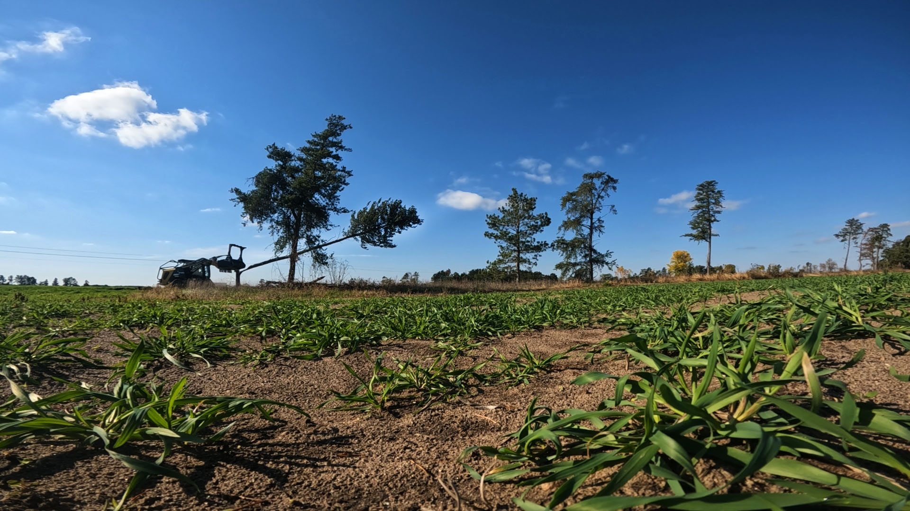
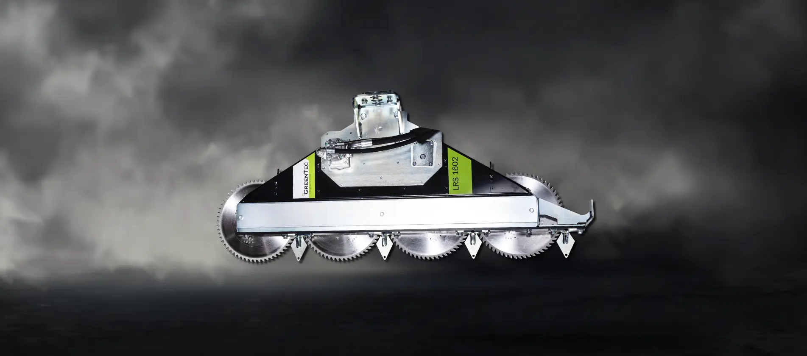
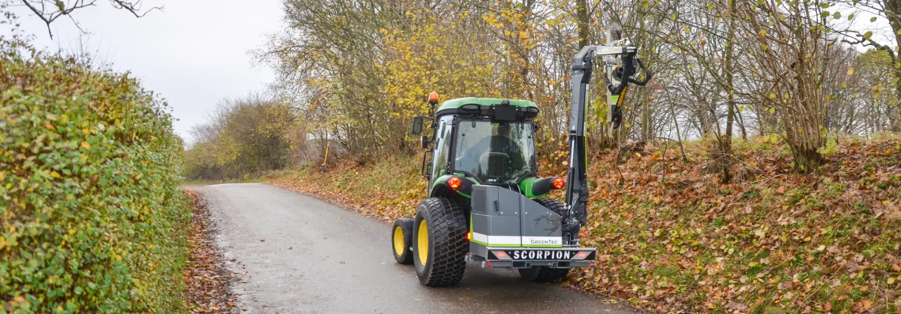
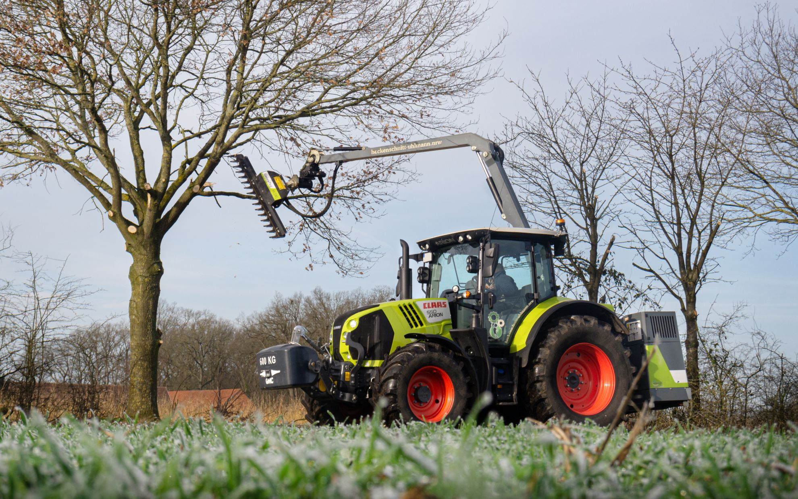
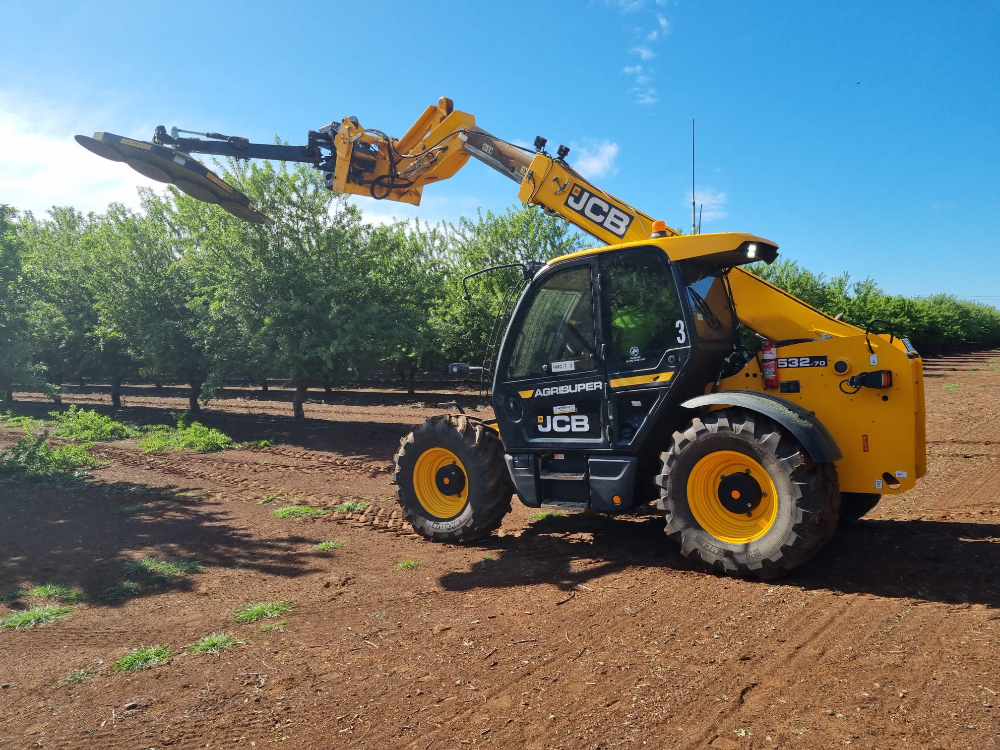
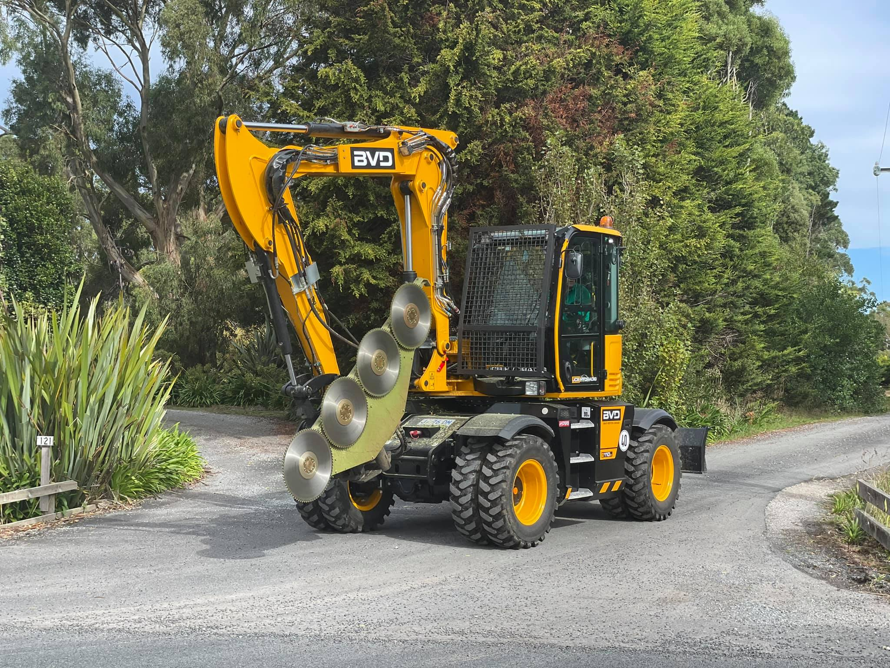

Leucaena Management
Drum Mulchers, Disc Mulchers and Quadsaws for mechanical management of established leucaena.
Compare leucaena management equipment
 DISC MULCHER
90+ HP high-flow skid steers only
DISC MULCHER
90+ HP high-flow skid steers only
Virnig V70 Tree Disc Mulcher
High-productivity cutting and mulching.

DRUM MULCHER 90+ HP high-flow skid steers onlyVirnig V70 Drum Mulcher
Maximum material processing and the finest residual material.
 QUADSAW
Asset required — Quadsaw + Multi Carrier operating in leucaena
QUADSAW
Asset required — Quadsaw + Multi Carrier operating in leucaena
GreenTec Quadsaw
High-productivity cutting without mulching the material.
Which system suits your operation?
| V70 Disc | V70 Drum | Quadsaw | |
|---|---|---|---|
| Primary action | Cut + mulch | Cut + finely mulch | Cut |
| Residue | Coarser mulch | Fine mulch | Material left intact |
| Relative work rate | Very High | High | Moderate |
| Typical carrier | High-flow skid steer | High-flow skid steer | Tractor / telehandler / loader / skid steer |
| Primary advantage | Productivity + processing | Finest processing | Productivity + carrier flexibility |
Actual work rate depends on crop condition, carrier configuration, stem diameter, biomass and other operating conditions.
Have a high-flow skid steer?
Primarily have a tractor or telehandler?
See them working in leucaena
V70 Disc Mulcher working through established leucaena on a 90+ HP high-flow skid steer.
Sequence: approach into the row · cutting action · forward travel through the row · material processed · finished result.
Meanwhile: V70 Disc walk-aroundV70 Drum Mulcher reducing a row, with the finished mulch visible behind the machine.
Walk-around videoQuadsaw cutting leucaena from a tractor or telehandler, showing the intact cut material.
Quadsaw cutting footageProven in leucaena
Upload the customer and machine photograph — carrier and attachment together, treated row visible behind.
Virnig V70 Tree Disc Mulcher
High-productivity cutting and processing for suitable high-flow skid steers.
The V70 Disc Mulcher provides a productive method of mechanically resetting established leucaena while processing the material as it cuts.
Compared with the drum mulcher it generally performs less material processing, allowing higher forward productivity in suitable conditions while leaving a coarser residual material.
Because the carrier travels through the treated row, operating height is influenced by the clearance the skid steer needs to pass over the cut material.
Virnig V70 Drum Mulcher
Maximum material processing for a finer finished result.
The drum progressively cuts and processes the leucaena, producing considerably finer residual material than the disc mulcher or QuadSaw.
That additional processing requires more work from the attachment, so the drum generally trades some forward productivity for a finer finished result.
As with the disc mulcher the skid steer must travel over the treated row, which generally requires the leucaena to be reduced to a relatively low operating height.
Disc result vs drum result
Photograph both from the same height and distance, same stand, same day. This comparison sells the difference better than any paragraph.
GreenTec Quadsaw
Cut the leucaena without processing the material.
Quadsaw operating from a tractor or telehandler in leucaena — wide shot showing the cut face and the intact cut material.
The Quadsaw takes a fundamentally different approach to the mulchers. Rather than using available power to process the entire canopy into smaller material, the saw concentrates on making the cut.
The cut material is left substantially intact. The system can also be configured around a broader range of carriers through the GreenTec Multi Carrier system.

LRS 1602

LRS 2002
LRS 2402
Working widths and branch capacities are published GreenTec figures — confirm against the model page before ordering.
Which vehicle are you running?
Tell us the machine you already have on the property and we will recommend the attachment and configuration that suits it.

Tractor
Telehandler Loader
Loader

Excavator Skid steer
Skid steer
Running something else? Tell us what you have.
In the field
What Are You Running?
Send us your carrier details and a photo of the leucaena. We'll help identify the right attachment and configuration.
Or call 07 5315 8020More than the attachment
We start from the carrier and the stand, not from what is in stock. If none of the three approaches suits your situation, we will say so.
Lift capacity, mounting and machine weight checked against the attachment before an order is placed.
Flow and pressure confirmed against the attachment specification — the difference between a head that holds speed under load and one that does not.
Where applicable we set the attachment up on the carrier and run it before it leaves.
Teeth, blades and wear parts held in Australia for the GreenTec and Virnig ranges we distribute.
Direct access to people who have specced and serviced these machines, not a call centre script.
The relationship continues past delivery — most of our repeat business comes from it.
We size attachments against carriers every week. If the machine you run won't do the job properly, we'd rather tell you before you buy.
Mechanical leucaena management
Maintaining established leucaena
Where grazing pressure alone is no longer holding canopy height and structure, mechanical cutting becomes the practical control. The objective is to reset canopy height and return subsequent growth to the effective grazing zone.
Wet-season growth
Under favourable growing conditions vegetative development is rapid, and the window between a bush that is easy to manage and one that is not can be short.
Monitoring canopy development and intervening before excessive biomass and stem development accumulate generally improves the efficiency of the cutting or mulching, because the attachment has less material and less woody material to handle.
Cutting before excessive woody development
Canopy density, green biomass, lignification and stem diameter all determine how much material the attachment must handle per metre travelled.
As stems lignify and diameter increases, more of the available hydraulic power goes into making the cut and processing the material, which shows up directly as reduced forward productivity.
Flowering and seed set
Mechanical canopy management forms part of a broader strategy for managing flowering and seed production in leucaena.
It is one input among several — timing, grazing management and the broader agronomic plan to reduce the risk of volunteer leucaena seedlings spreading quickly.
Leucaena pasture productivity
Well-managed leucaena is recognised in Australian research as one of the most productive cattle feeds, with canopy management playing a role in keeping accessible, productive regrowth within reach of stock.
Meat & Livestock Australia, FutureBeef, The Leucaena Network and the Queensland Government publish the agronomic guidance.
Agronomic guidance on leucaena establishment, grazing management and pasture productivity is published by Meat & Livestock Australia, FutureBeef, The Leucaena Network and the Queensland Government. DTE Equipment supplies the mechanical equipment — we don't claim a direct causal link between mechanical cutting and cattle weight gain.
Leucaena management equipment FAQs
Assets to collect before this page goes live
Hide this block with the Show asset checklist tweak before publishing.

Match the attachment to your machine and leucaena
Send us your carrier details and photos of the stand. We'll help identify the appropriate setup.